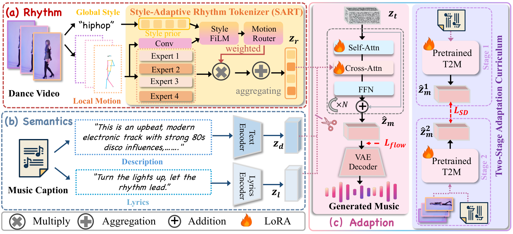
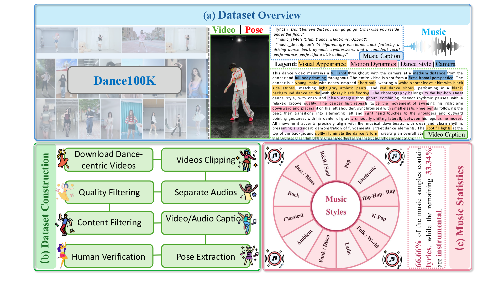

Style-Adaptive Rhythm Tokenizer (SART)
A motion-adaptive mixture of shared rhythmic primitives captures both global dance style and fine-grained temporal dynamics for precise beat synchronization.
Rhythm-Adaptive Modeling and Prior-Preserving Adaptation for Dance-to-Music Generation
Overview
A motion-adaptive mixture of shared rhythmic primitives captures both global dance style and fine-grained temporal dynamics for precise beat synchronization.
Rhythm tokens govern temporal structure, while text and lyrics independently control musical style, mood, instrumentation, and vocals.
A two-stage curriculum with self-distillation injects dance control while retaining the musical quality and generative knowledge of the pretrained model.

Dataset
Dance100K is a large-scale and highly diverse dance–music dataset with rich multimodal annotations, covering diverse dance styles, music genres, choreography, visual context, instrumentation, and lyrics. We further introduce a 3K source-music-disjoint benchmark to prevent music-level leakage and provide a reliable testbed for evaluating rhythmic alignment and semantic consistency.

Interactive Showcase
Controllability
Each pair uses identical dance and rhythm conditions, diffusion seed, instrumental lyrics condition, and inference settings. Only the text prompt is changed.